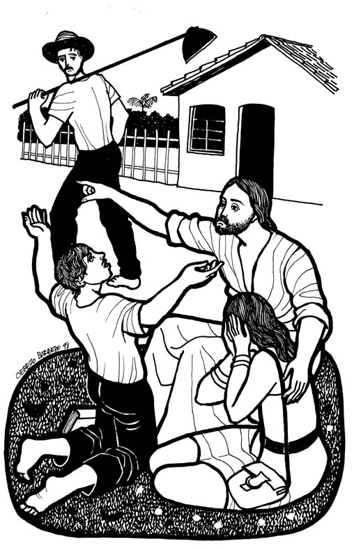
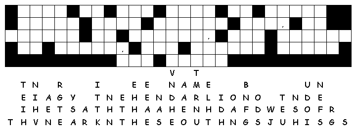

www.logrus.ca Year
A
Proper 21
This week's lessons: Exodus 17:1-7 and Psalm 78:1-4, 12-16 • Ezekiel 18:1-4, 25-32 and Psalm 25:1-9 • Philippians 2:1-13 • Matthew 21:23-32
Opening prayer by leader, or invite another participant to pray, or use:
Almighty God, who has caused all Holy Scripture to be written for our learning, open our ears and hearts today to learn from your word and from one another, we ask in Jesus' Name. Amen
Set the calendar-clock to the right date. Pentecost is the season of the church's growth, beginning with Pentecost Day which is the birthday of the church, and continuing to the end of the church year.Its colour is green.
Today, the Gospel reviews for us ....
What was the sermon on? -
What was the Gospel lesson? -
Did anyone have any insights about...
1. What is the fruitful labor in which you are engaged?
2. What do other churches and people of faith "hear about” Emmanuel?
3. How is our church a shining place of hope for the communities of Dover and Forest Lawn?
4. In what way might our church as a community see itself as "privileged" to suffer?
5. In what ways does our Church suffer, or has it suffered, and how does that bear fruit?
Moreover if thy brother shall trespass against thee, go and tell him his fault between thee and him alone: if he shall hear thee, thou hast gained thy brother.
But if he will not hear thee, then take with thee one or two more, that in the mouth of two or three witnesses every word may be established.
And if he shall neglect to hear them, tell it unto the church: but if he neglect to hear the church, let him be unto thee as an heathen man and a publican.
Verily I say unto you, Whatsoever ye shall bind on earth shall be bound in heaven: and whatsoever ye shall loose on earth shall be loosed in heaven.
Again I say unto you, That if two of you shall agree on earth as touching any thing that they shall ask, it shall be done for them of my Father which is in heaven.
For where two or three are gathered together in my name, there am I in the midst of them.
or
What parallels do you see between this reading and the Exodus reading?
Pew-work Hand-outs
“Pew-work” is like Home-work, except that it is done in the pews, instead of being done at home. Because it is focussed on the readings (as the sermon, presumably, also is) it can be done during the sermon to help the listener concentrate. Or, it can be done while waiting for everyone else to finish their communion. It isn't done during prayers, or hymns, or the readings, because
During Prayers, we pray
During Hymns, we sing
During the Readings, we listen

Cerezo
Barredo's Lectionary illustrations --
http://www.servicioskoinonia.org/cerezo/dibujosA/49OrdinarioA26.jpg
Misioneros del Sagrado Corazón en el Perú: From http://www.mscperu.org/grafic/graficoslit/aTO/picAto/26_to_a.jpg
|
A F E I H C S E A
I N T O |
AFRAID ANSWER ANSWERED ASK ASKED AUTHORITY BAPTIZE BEING BELIEVE CHIEF EACH GONE GOT HAD HEAVEN HIM HUMAN INTO JESUS JUST LEADERS MERELY ONE OTHER PEOPLE PRIESTS PROPHET QUESTION RIGHT SAY SOME TEACHING TEMPLE THE THESE THINGS THINK THOUGHT WAS WHERE |
|
23Jesus had gone into the ________ and was ________ when the chief priests and the leaders of the people came up to him. They asked, "What right do you have to do these things? Who gave you this ________?" 24Jesus answered, "I have just one ________ to ask you. If you answer it, I will tell you where I got the right to do these things. 25Who gave John the right to baptize? Was it God in ________ or merely some human being?" They ________ it over and said to each other, "We can't say that God gave John this right. Jesus will ask us why we didn't ________ John. 26On the other hand, these people think that John was a ________, and we are afraid of what they might do to us. That's why we can't say that it was merely some human who gave John the right to ________." 27So they told Jesus, "We don't know." from http://www.efree.mb.ca/lectionarypuzzles free to distribute for free with this notice. Words are in a straight line left to right or top to bottom |
|
1.
Where was Jesus
teaching?
____________________________________________________________________________
2.
What did the chief priests of the Temple want to
know?
____________________________________________________________________________
3.
How did Jesus answer
them?
____________________________________________________________________________
4.
What did the priests
answer?
____________________________________________________________________________
Questions taken from Sunday School Lessons; http://www.sundayschoollessons.com/baplord.htm
How much agreement do we require to be in community, and how much diversity can we tolerate without it destroying our community? ____________________________________________________ _____________________________________________________________________________________________________________________________________________________________________________________________________________________________________________________________________________________________________________________________________________________________________________________________________________________________________________________________________________________________________________________________________________________________________________________________________

|
What Scripture is the Sermon is based on? |
__________________________________ |
|
What is the main point of the Sermon? |
__________________________________ |
|
Write down any figures of speech used by the preacher (Metaphors, Similes, hyperbole) |
__________________________________ |
|
Write down any new, unusual or particularly interesting words the preacher uses |
_______________
|
Focus Statement: "Be of the same mind, having the same love, being in full accord and of one mind."
|
_________________________________________ |
|
_________________________________________ |
|
_________________________________________ |
|
_________________________________________ |
Next week: Exodus 20:1-4, 7-9, 12-20 and Psalm 19 • Isaiah 5:1-7 and Psalm 80:7-15 • Philippians 3:4b-14 • Matthew 21:33-46